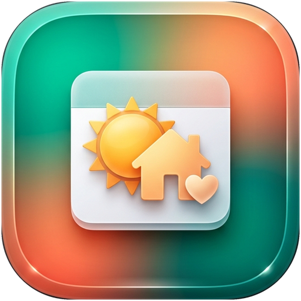

Familien-Briefing
v1.2.0
Live
Veronika & Johannes •
Stand: wird geladen…
🔄
Aktualisieren
📅 14-Tage-Überblick
Heute
HEUTE
Donnerstag, 29. Oktober 2026
◀
▶
⏭ FOLGETAG
Freitag, 30. Oktober
Öffnen →
📊 Nächste 30 Tage
🗂 Kommende Termine
Alle
🚑 Schichten
💛 Familie & Privat
🚴 Sport
🎉 Feiertage